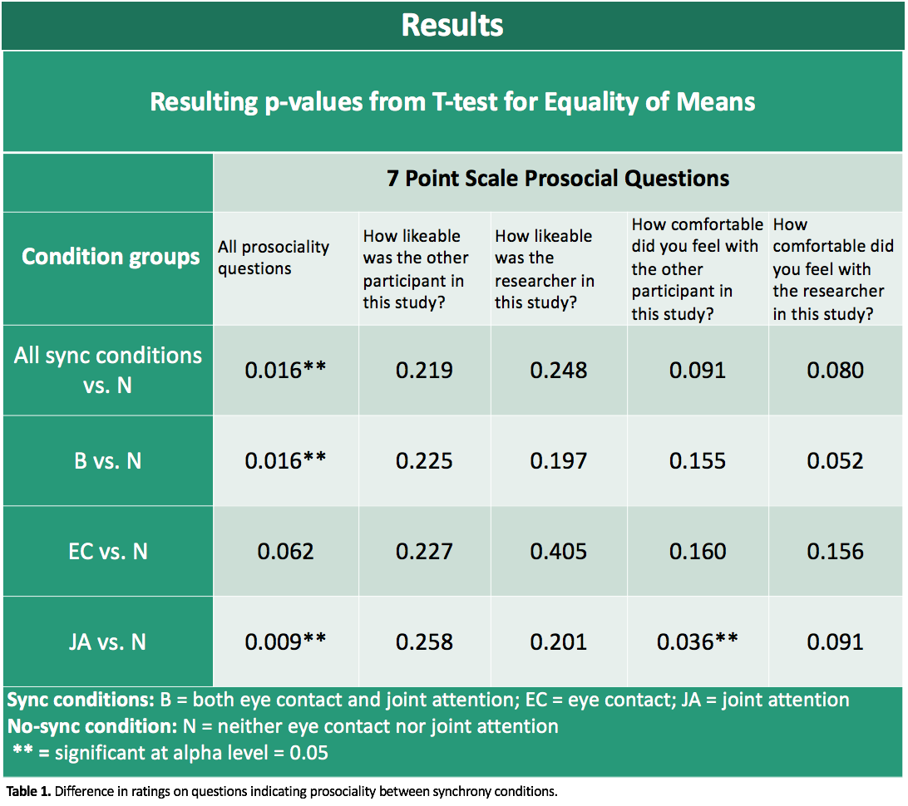

This was an IRB-approved research study that investigated neural synchrony in relation to prosocial feelings between two individuals. I was interested in using EEG to study synchrony promoted by eye contact and joint attention. I recruited subjects through the Tufts Sona subject pool and through flyers posted on the Tufts Medford campus.
In this study, two participants sat in the same room. They were fitted with EEG headbands and then one minute of eyes open and one minute of eyes closed EEG was recorded for baseline purposes. Next, depending on the condition, participants either engaged in eye contact, joint attention, both, or neither. Then, one participant left the room while the other participant completed a distractor task, which was a 3-back memory test. Finally each participant took off the EEG headband and completed a survey in private.
The first three conditions are synchrony conditions while the fourth condition is a non-synchrony control condition.
There was a significant difference between the responses of participants in the synchrony conditions and participants in the no synchrony condition to all prosociality questions. When the synchrony conditions are examined individually, the responses of those in the Joint Attention and Both conditions, but not the Eye Contact condition, significantly differed from the responses of those in the no synchrony condition. These results suggest that engaging in synchronous activities with another person promotes prosocial feelings towards that person, or at least that there are stronger prosocial feelings when subjects engage in synchronous activities versus when they do not.
Though there was not a statistically significant difference between the responses of participants in the Eye Contact and no synchrony conditions, the p-value was close to being significant, and a replication study may be necessary to develop a robust picture of the role of eye contact in partner interaction.
When comparing responses from a single question between conditions, the only significant difference was between those in the Joint Attention condition and those in the no synchrony condition in their response to “how comfortable did you feel with the other participant in this study?” The lack of significant results may be due to the fact that the data sets were small.
I also ran correlations between EEG metrics for partners in synchrony and non-synchrony conditions.
In data analysis, I tested different methods for processing and analyzing EEG data such as EEGLAB in MATLAB and the NumPy Fast Fourier Transformation function in python.
The next step in data analysis for this project is to further analyze the EEG synchrony levels between study partners and whether or not differences in these levels exist between different conditions. I will also look into the relationship between synchrony levels and responses to survey questions indicating prosociality.